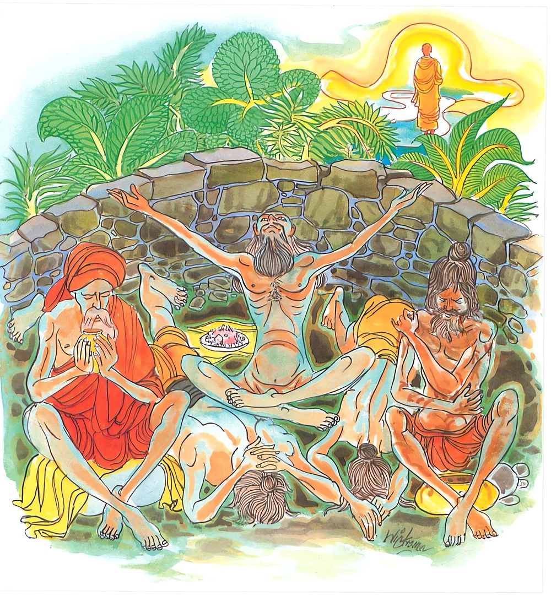

10-8 බහුභාණ්ඩික තෙරුන්ගේ කථා පුවතයි.
මෙම කතාව සද්ධර්ම සාගරයෙන් ද කියවන්න.
න නග්ගචරියා න ජටා න පඞ්කා
නානාසකා ථණ්ඩිලසායිකා වා
රාජො ච ජල්ලං උක්කුටිකප්පධානං
සොධෙන්ති මච්චං අවිතිණ්ණකඞ්ඛං.
(පුබ්බන්තාපරන්තාදි අට තන්හි උපදනා අෂ්ටවස්තුක ශාඞ්කව නොඉක්මුණු හෙයින්) එ තෙර නො වූ ශාංකා මහවතුර ඇති පෘථග්ජන සත්ත්වයා (අචේලව්රත සමාදානයෙන්) නග්න වැ ඇවිද කරණ තපස්හු ද ශුද්ධ නො කරන්නාහ (ලොකනිඃසරණයට හෙවත් නිවනට නො පමුණු වන්නාහ). ජටාවෝ ද ශුද්ධ නො කරන්නාහ. දන්තමලධාරණය, ඇහැ මද ගැල්වීම යන මොහු ද ශුද්ධ නො කරන්නාහ. ආහාර නොවළදා කරණ තපස්හු ද ශුද්ධ නො කරන්නාහ. (අජව්රත ගෝව්රත සමාදානයෙන්) බිමැ හෙවැ කරණ තපස්හු ද ශුඬ නො කරන්නාහ. ආගන්තුක රජස් දැරීමය, නොනහා වෙරැ දැලි ඉසිලීම ය, උත්කුටිකායෙන් ම හිඳ ඇවිද කරණ තපස් ය යන මොහු ද (ඒ සත්ත්වයා) ශුද්ධ නො කරන්නාහ. (නිවනට නො පමුණුවන්නාහ).

“න නග්ගචරියා” යන මේ ධර්ම දේශනය ශාස්තෲන් වහන්සේ සැවැත් නුවර දෙව්රම් වෙහෙර වැඩසිටිය දී බහුභාණ්ඩික (අධික බඩු ඇති) භික්ෂු නමක් අරමුණු කොට දෙසූහ.
සැවත් නුවර සිටි එක් කෙළෙඹි පුත්රයෙක් බිරිඳ කළුරිය කළ පසු පැවිදි වූයේය. හේ පැවිදි වනවිට තම පිරිවෙණ ද ගිනිහල් ගෙය ද බඩුගබඩාව ද ගිතෙල් මීපැණි තෙල් ආදියෙන් පුරවා පැවිදි වූයේය. පැවිදි වූවාට පසුව ද තමන්ගේ සේවකයින් කැඳවා කැමති ලෙස ආහාර පිළියෙළ කරගෙන අනුභව කරයි. බොහෝ පිරිකර ආදී බඩු ද විය. රාත්රියේ අනෙක් වසන තැනකද දිවාකල විහාර ප්රත්යන්තයේද වාසය කරති. එහි එක් දිනක් සිවුරු - ඇතිරිලි පලස් ආදිය වේලීම සඳහා දමා තිබුණි. සෙනසුන් චාරිකාවේ යන භික්ෂූන් වහන්සේලා ඒවා දැක බලා ඇවැත්නි මේවා කාගේදැයි විමසා මගේ යයි පැවසුවිට. ඇවැත්නි බුදුරජාණන් වහන්සේ සිවුරු තුනක් අනුමත කර ඇත. නමුත් ඔබ මේ අපිස් බුදුසසුනේ පැවිදිවි මෙසේ බොහෝ පිරිකර භාවිතා කරයි. කියා ඔහු බුදුන් වෙත රැගෙන ගියහ. ගොස් ස්වාමීනි මොහු බොහෝ භාණ්ඩ අයත්ව සිටින්නෙකැයි දැක්වුහ. බුදුහු මහණෙනි ඇත්තදැයි විමසා ස්වාමීනි ඇත්ත යයි පැවසුවිට මහණ මම අල්පේච්ඡතාදී ගුණය ගැන ධර්මය දේශනා කරද්දී මෙසේ ඔබ බහු භාණ්ඩිකවී දැයි විමසුහ. ඔහු මෙයින් කෝපයට පත්වුයේ මේවා බැහැර කොට හැසිරෙමියි පෙරවන සිවුර විසිකොට පිරිස මැද එක සිවුරෙන් සිටියේය. ඉක්බිති තථාගතයන් වහන්සේ ඔහුට පිටුවහල් මහණ නුඹ පෙර හිරිඔතප් සොයන රකුසු කාලයේ ද හිරිඔතප් සොයමින් දොළොස් වසරක් වාසය කළේ ද, කුමක් හෙයින් දැන් ගෞරවනීය බුදුසසුනේ පැවිදිව සිව් පිරිස් මැද පෙරවු සිවුර විසිකර ලජ්ජා බිය අතහැර සිටියේද? ඔහු බුදුන්ගේ වදන් අසා ලජ්ජා බය සිහිකර ඒ සිවුර පෙරවා බුදුන් මැද එකත් පසෙක වාඩිවිය.
භික්ෂූන් වහන්සේලා එහි අරුත් විමසනු සඳහා බුදුන්ගෙන් විමසුහ. බුදුහු අතීත පුවත ගෙන හැර දැක්වුහ.
අතීතයේදී බරණැස් රජුගේ බිසවගේ කුස බෝසතාණෝ පිළිසිඳ ගත්හ. ඔහුට නම් තබන දින මහිංසාසක කුමාර යයි නම් තැබුහ. ඔහුගේ කණිටු සොහොයුරු චන්දන කුමාර නම් විය. ඔවුන්ගේ මවු කළුරිය කළ කල්හි රජු අන් බිසවක අගමෙහෙසුන් තනතුරේ තැබීය. ඇය පුතෙකු බිහි කළාය. ඔහුට සූර්ය කුමාර යන නම කළහ. ඔහු දැක රජු සතුටුවූයේ පුතා වෙනුවෙන් වරයක් දෙමියි පැවසුවේය. ඇය කැමති කාලයක එය ගන්නෙමියි කියා කල් දී පුතු වැඩිවියට පැමිණි කල රජුට මෙසේ පැවසුවාය. මහරජ පුතු ඉපදුණ විට වරයක් දෙන ලදී. දැන් මගේ පුතුට රාජ්ය දෙන්නැයි කීවාය. මගේ පුතුන් දෙදෙනා ගිනි කඳන් සේ දිලෙමින් හැසිරෙති එනිසා ඔහුට රාජ්ය දීම කළ නොහැකියයි ප්රතික්ෂේප කළේය. එහෙත් නැවත නැවත ඇය ආයාචනා කරද්දී මේ තැනැත්තිය මගේ පුතුන්ට අනර්ථයක්ම කරනු ඇතැයි සිතා පුතුන් දෙදෙනා කැඳවා දරුවනි මම සූර්ය කුමාර උපන් දින වාරයක් දෙන ලදී. දැන් ඔහුගේ මව රාජ්ය ඔහුට ඉල්ලයි. මම ඔහුට රාජ්ය දීමට කැමති නොවෙමි. එහෙත් ඔහුගේ මව නුඹලාට අනතුරක් කරනු ඇත. ඒනිසා තෙපි ආරණ්යයට ගොස් මගේ ඇවෑමෙන් පැමිණ රාජ්ය ගන්නැයි උනන්දු කළේය.
ඔවුන් පියාට වැඳ ප්රාසාදයෙන් බැස යන කළ රජ මිදුලේ ක්රීඩා කරමින් සිටි සූර්ය කුමාරයා දැක ඒ කරුණ දැන ඔවුන් සමගම නික්ම ගියේය. ඔවුන් හිමවතට පිවිසි අවස්ථාවේ දී බෝසතාණන් වහන්සේ මගින් බැස එක්තරා ගසක් මුල වාඩි වී සූරිය කුමාරයාට මෙසේ කීවේය. දරුව - එක් විලකට ගොස් නාගෙන ජලය බී අපටද නෙළුම් කොළවල ජලය ගෙන එන්න යනුවෙනි. එම විල වෛශ්රවණ සමීපයේ එක් ජල රකුසෙක් විසින් අරක් ගත්තේ වෙයි. වෙස්සවණ යක්ෂයාද ඔහුට මෙසේ කියා තිබුණි. දේවධර්මය දන්නවුන් හැර අනෙක් අය මේ විලට බැස්සවිට ඔබට ආහාරයට ගත හැකිය. එතැන් සිට මේ රකුසා විලට බැස්ස අයගෙන් දේවධර්මය විමසා නොදන්නා අය භක්ෂණය කරයි. සූර්ය කුමාරයාද එය නොවිමසාම විලට බැස්සේය. එහිදී දේවධර්මය දනීදැයි විමසා සිටියේ. දේවධර්මය නම් හිරු සඳුයි පැවසුවේය. එසේනම් ඔබ දේවධර්මය නොදනීයයි ජලය තුළට ගෙන ගොස් තම වාසභවනෙහි තැබීය. බෝසතාණෝද ඔහු ප්රමාද බව දැන චන්ද්ර කුමරු යැවීය. ඔහුගෙන්ද දේවධර්මය විමසුවිට දේවධර්මය නම් සතර දිසා යයි පැවසුවේය. ජල රකුසාද ඔහුම ගෙන ගොස් එහිම තැබීය. බෝසත් තෙම ඔහුද ප්රමාදය නිසා අනතුරක් යයි සිතා තමන් ගොස් දෙදෙනාම විලට බසින ලද පාසටහන් දැක මේ විල ජල රකුසෙකුගේ ස්ථානයක් යයි දැන කඩුව අමෝරාගෙන දුන්න ගෙන සිටියේය. රකුසා ඔහු නොබසින බව දැන වනවර මිනිසෙකුගේ වෙසින් පැමිණ
එම්බා පුරුෂය නුඹ ගමන් විඩාවට පත්වුයේ කුමක් නිසා මෙම විලට බැස නා දිය පානය කොට නෙළුඹුදැල් කා නෙළුම් මල් පැළද නොයන්නේ කුමක් නිසාදැයි විමසීය. බෝසතාණන් වහන්සේ ඔහු දැක මේ රකුසෙකැයි දැන නුඹ විසින් මගේ සොහොයුරන් ගන්නා ලද දැයි විමසුවේය. ඔව් මා විසින් ගන්නා ලද්දෙමි. කුමක් නිසාදැයි විමසීය. මේ විලට බසින්නන් ගැනීමේ අයිතිය මට ඇත. කෙසේද ඔබ සියල්ලන්වම ලබයිද? නැත දේවධර්මය දන්නවුන් හැර අනෙක් අය ගනිමි. කී කල ඔබට දේව ධර්මයෙන් ප්රයෝජනයක් ඇත්දැයි වීමසීය. ඔව් මට අර්ථයක් ඇතැයි පැවසූවිට මම දේවධර්මය දනිමියි කීය. එසේ නම් කියව කිළිටි සිරුරෙන් යුතුව දේවධර්මය කිව නොහැකියයි පැවසුවිට රකුසා විසින් බෝසතුන් නාවා පැන් පොවා අලංකාර කොට සරසන ලද මණ්ඩපයක පළඟක් නගා හිඳුවා තමන් පාමුල සිටියේය. අනතුරුව බෝසත් තෙම හොඳින් අහගන්නැයි මේ ගාථාව පැවසූහ.
ලජ්ජාව සහ බිය නැතහොත් හිරි ඔතප් දෙක
දෙවියන් අතර රැඳි දහමයි කියති පඬුවෝ
රකුසා දහම් දෙසුම අසා පැහැදී බෝසතුන්ට කීවේ ඤාණවන්තය, මම තා කෙරෙහි පැහැදුනේ වෙමි. එක සොහොයුරෙක් ගෙන එමි. කණිටු සොහොයුරා ගෙන එන්නැයි කීවේය. නුවණැත්තාණනි, ඔබ හුදෙක් දේවධර්මය දන්නේ මුත් එසේ නොපවතින්නේ කුමක් නිසාදැයි විමසීය. යම් හෙයකින් ජ්යෙෂ්ඨ සොහොයුරා තබා බාලයා ගෙන එන්නේ නම් ජ්යෙෂ්ඨ උපකාරක කර්මය නොකරන්නේ වෙයි. යක්ෂය - මම දේවධර්මය දනිමි. ඒ දහම අනුගමනය ද කරමි.
අපි මේ තැනැත්තා නිසා කැලයට ආවෙමු. මොහුගේ මව මොහුට මොහු නිසා රාජ්ය ඉල්ලුවාය. අපේ පියා ඔහුට රාජ්ය නොදී අපව ආරක්ෂා කරනු සඳහා වන වාසය අනුමත කළේය. ඒ කුමරු ද නොනැවතී අප සමඟම ආවේය. ඔහු වනයේ දී එක් යකෙක් කෑවේ යයි කීවිට දී කිසිවෙක් අදහන්නේ නැත. එනිසා ගැරවීම් ලැබීමේ බියෙන් ඔහුව අවශ්ය බව පැවසුවේය. යක්ෂයා බෝසතුන් කෙරෙහි පැහැදී යහපති. ඤාණවන්තය. ඔබ දේවධර්මය දන්නේ යයි සොහොයුරන් දෙදෙනාම ගෙනවුත් දුන්නේය. අනතුරුව බෝසතුන් යක්ෂභාවයේ ආදීනව පෙන්වා දී පන්සිල්හි පිහිටුවීය. ඔවුන් යක්ෂයා විසින් මැනවින් ආරක්ෂා කරන ලද්දේ ඒ වනයෙහි වාසය කොට පියා මිය ගියවිට යක්ෂයා ද සමග බරණැසට ගොස් රාජ්ය ලබාගෙන චන්ද්ර කුමරුට යුව රජ තනතුරද සූර්ය කුමරුට සේනාපති තනතුරද දී යක්ෂයාට රමණීය ස්ථානයක ආයතනයක් කරවා ඔහුට ලාභ ලැබෙන ලෙසට කටයුතු යොදවා ලීය. බුදුහු මේ දම් දෙසුම ගෙන හැර දක්වා ජාතක දේශනය සැසඳ වුහ. එදා රකුසා බහු භණ්ඩික වීය. සූර්ය කුමාර ආනන්ද විය. චන්ද්ර කුමරු සැරියුත් මහතෙරුන්ය. මහිංසාසක කුමාර නම් මමම වේදැයි මෙසේ බුදුහු ජාතකය දේශනා කර මහණෙනි මෙසේ පෙර දේවධර්මය සොයමින් ලජ්ජා බිය ඇතිව හැසිරී. දැන් සිව්වණක් පිරිස් මැද මේ අයුරින් සිට මා ඉදිරිපිටදී අල්පේච්ඡ යයි කියමින් අයුතු දෙයක් කළේය. සළුපිලි ප්රතික්ෂේප කිරීමෙන්ම ශ්රමණයෙක් නොවේ යයි කියා අනුපිළිවෙල සම්බන්ධ කර දහම් දෙසමින් මේ ගාථාව පැවසුහ.
නිරුවත්ව ඉඳුමෙන් - ජටා ගෙන හිස බැඳුමෙන්
සිරුරේ මඩ ගෑමෙන් - බඩ ගින්නේ ඉඳීමෙන්
උක්කුටිකව ඉඳන් - බලු ඈ වෙස් ගැනීමෙන්
පිරිසිදු නොවේ කිසිවෙක් - මහණෙක්ද නොම වේමැයි.
නොනැසු සැක ඇති සත්ත්වයා නග්නව හැසිරෙමින් තපස් රැක සැකය ශුද්ධ නොකරති. ජටාවෙන් ද ඇඟ මඩ තැවරීමෙන් ද ආහාර නොගැනීමෙන් ද බිම වැතිරීමෙන්ද සියළඟ වූ දුලිගාගෙන කරන තපසින් ද උක්කුටිකව හිඳ වෑයම් කිරීමෙන් ද සැකය ශුද්ධ නොකරති.
එහි නානාසකාති - ආහර නොගන්තෝයි ආහාර බත් ප්රතික්ෂේප කරන යන අර්ථයයි. ථණ්ඩිලසායිකා. භූමීයේ වැතිරගෙන සිටින අයයි. රජොව ජල්ලං මඩවැතිරගත් දූවිලි වැකුණ අයයි. උක්කුටිකප්පධාන - උක්කුටිකයෙක් වෙර වඩන්නෝයි යම් මනුෂ්යයෙක් මෙසේ මම ලෝක නිස්සරණ සංඛ්යාත සුද්ධිය ලබවැයි මේ නිරුවත් චර්යාවන්හි යම් දෙයක් සමාදන්ව පවතීද ඔහු හුදෙක් මිත්ථ්යා දර්ශනයක් මෙන්ම ක්ලාන්ත බවක්ම ලබයි. මේ සුසමාදින්න නම් අෂ්ට වස්තුක වූ සැකයෙන් තොර නොවු මිනිසා සෝධනයට පත් නොවේ. දෙසුම් අවසාන බොහෝ දෙන සෝවාන් ආදී මාර්ග ඵලයන්ට පැමිණියහ.